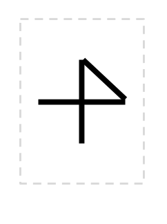
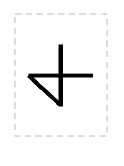
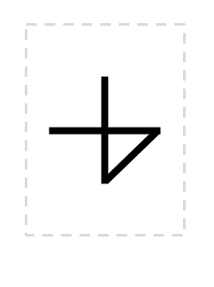
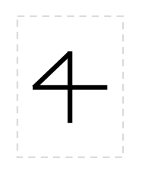

| hide answer key | shuffle now |
| Exam Version: |
|
Name: ___________________________________________________
Umail Address: ______________________________@ umail.ucsb.edu
Please write your name only on this page.
That allows me to grade your exams without knowing whose exam I am grading.
This exam is closed book, closed notes, closed mouth, cell phone off,
except for:
There are 100 points worth of questions on the exam, and you have 180 minutes to complete the exam.
A hint for allocating your time—on your first pass through the exam:
Please refer to the handout for more information on this problem. The handout describes functions for drawOne, drawPlus, and drawOnePlusOne, and you need that information to be able to continue with the problem.
This problem continues on the next page...
(10 pts) The definition of drawPlus below has a problem, and will not draw the plus correctly. You need to do two things. First, figure out what the code actually draws (instead of a correct +) and circle the diagram below that corresponds to that. If none of the diagrams is correct, circle "none of these", and draw your own picture.




|
Noneof these. |
Version A
Version B
Version C
Version D
(20 pts) Please write a complete Python function definition for a function named avgOfTwo. It should take exactly two parameters, add them together, divide by two, and return the result.
IMPORTANT: For full credit, include a docstring with exactly one test, using the doctest technique that we used in lab02 (and also lab03, as it turns out.)The test should check that the function computes the average of 3 and 5 to be 4.
Now, for a break, a few easy questions to end the exam that are just like the homework questions.
city="Fresno"
city="Malibu"
city="Oxnard"
city="Ventura"
then what is the value of each of these?
city[1]city[2]city[-1]city[2:4]city[1:]Fill in the values printed by the code. If there will be no output, write "no output".
NO PARTIAL CREDIT: 4 pts for each exactly correct answer, 0 pts for any deviation, per part below.
Spacing and punctuation count: don't put commas if none would be printed, and if answer is on multiple lines, write your answer on multiple lines. Don't indent unless the answer would be indented.
(3 pts)
for i in range(4): print (i) for i in range(5): print (i) |
|
(3 pts)
for i in range(6,4): print (i) for i in range(4,1): print (i) for i in range(7,3): print (i) |
|
(3 pts)
for i in range(3,8,2): print (i) for i in range(2,7,2): print (i) for i in range(5,10,2): print (i) |
|
(3 pts)
for i in range(6,10,-1): print (i) for i in range(3,7,-1): print (i) |
|
(3 pts)
for i in range(7,4,-1): print (i) for i in range(11,8,-1): print (i) |
The next few questions are all "What is the output" questions.
They work just like the ones we did in lecture.
You probably know what to do, but just to be sure,
the handout explains what I'm looking for.
READ IT NOW
Then proceed...
(5 pts) What is the output when this is run in the IDLE editor?
Be sure to end your answer with >>>.
woA1
woA2
woA3
woA4
(5 pts) What is the output when this is run in the IDLE editor?
Be sure to end your answer with >>>.
woB1
woB2
woB3
woB4
(5 pts) What is the output when this is run in the IDLE editor?
Be sure to end your answer with >>>.
woC1
woC2
woC3
woC4
Total points: ?